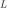
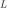
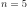
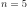
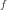
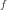

4.1.28. Pion: SPEX photoionised plasma model¶
The pion model calculates the transmission and emission of a slab of
photo-ionized plasma, where all ionic column densities are linked
through a photoionisation model. The relevant parameter is the
ionization parameter  , with  the source
luminosity,
, with  the source
luminosity,  the hydrogen density and
the hydrogen density and  the distance
from the ionizing source. The major difference is that while for the
xabs model the photoionisation equilibrium is pre-calculated for a
grid of
the distance
from the ionizing source. The major difference is that while for the
xabs model the photoionisation equilibrium is pre-calculated for a
grid of  -values by an external code, for instances Cloudy or
XSTAR (or even with the present pion model
-values by an external code, for instances Cloudy or
XSTAR (or even with the present pion model  ), in the
present pion model the photoionisation equilibrium is calculated
self-consistently using the available plasma routines of SPEX.
), in the
present pion model the photoionisation equilibrium is calculated
self-consistently using the available plasma routines of SPEX.
Warning
The default energy grid in SPEX has 8192 bins between 0.001 and 100 keV. This may not be sufficient for the pion model when you use it without data. Recommended is a logarithmic grid between keV with a step size of 0.005. You can get this by issuing the following command: ”Egrid log 1E-6 : 1E6 step 0.005 keV”. Note that if you have read in data, SPEX automatically expands the energy grid to this range and resolution, plus including all energy boundaries from the response matrix.
Warning
This model is still under development and not all atomic data is fully updated. For instance, no cooling by collisional excitation for ions of the K- to Zn-isolelectronic sequences is taken into account yet. So use with care!
Warning
When setting up the model, be aware that the pion model is
both additive and multiplicative (even if you put the emission to zero).
Therefore, the pion model needs the same com rel sequence as you use for
your absorption component. Example: com pow — com reds — com
pion — com rel 1 3,2 (a powerlaw that powers a pion model and is then redshifted)
needs as next command com rel 3 2, telling SPEX that the pion emission
model is also redshifted.
Warning
Please note that all PION components must be multiplied by at least one continuum component (using the usual comp rel command). Otherwise, photoionisation cannot be calculated and SPEX may crash. A typical AGN SED spanning optical to X-ray energies can be set up with three continuum components in SPEX: pow (primary hard X-ray power-law emission), refl (reflected power-law emission), comt (thermal optical/UV disk continuum + the soft X-ray excess). See the SED of NGC 5548 derived in Mehdipour et al. (2015).
The main advantage, however, is that the user can define his own ionising continuum by combining any additive components of SPEX, and that ionising spectrum is fed through the pion component to get the transmitted spectrum. In addition, multiple pion components can be used, with the light leaking from one layer to the next. And it allows for spectral fitting, where the parameters of the ionising continuum are determined simultaneously with the parameters of the absorbing layer. The number of parameters is therefore unlimited (well, the memory and cpu speed of the computer will be the true limiting factors).
Prior to fitting a PION component, it is best to first calculate the
model spectrum with your initial parameter values (see calculate
command). This helps to see if the initial values are reasonable numbers
and the model is not too far off the data.
4.1.28.1. Emission from the pion model¶
We have now incorporated a first version of emission
from the same layer. We cannot give you any guarantee at the moment that
it is bug-free. We know at the moment that the source has probelms when
the density gets too high; this is different for each ion; so unless you
limit the density in fitting, SPEX may encounter a situation where you
surpass the critical density and you may get a warning message. Here is
an example. For a photoionised case, with
(resulting keV) the nominal occupation of the ground
state of H becomes negative for a density
m . This can be traced down to
incomplete atomic data. For H , we include collisional excitation and
de-excitation up to principal quantum number  but not above.
As a result, in this example the 1s–5s levels are mainly
populated/depopulated by collisions, while 6s–16s are mainly populated
by radiative recombination and depopulated by radiative cascades
downward or photon absorption. The nominal occupation of 1s–5s then
decreases from 0.035 (1s) to 0.0024 (5s), while for 6s–16s they increase
slowly from 0.020 to 0.027. This is of course physically unacceptable.
It causes the lower levels to leak to the higher levels, with eventually
the catastrophe of negative occupation for the ground state. We mitigate
this by replacing the level populations by the LTE populations and
issueing a warning. Without this mitigation, SPEX would crash.
. This can be traced down to
incomplete atomic data. For H , we include collisional excitation and
de-excitation up to principal quantum number  but not above.
As a result, in this example the 1s–5s levels are mainly
populated/depopulated by collisions, while 6s–16s are mainly populated
by radiative recombination and depopulated by radiative cascades
downward or photon absorption. The nominal occupation of 1s–5s then
decreases from 0.035 (1s) to 0.0024 (5s), while for 6s–16s they increase
slowly from 0.020 to 0.027. This is of course physically unacceptable.
It causes the lower levels to leak to the higher levels, with eventually
the catastrophe of negative occupation for the ground state. We mitigate
this by replacing the level populations by the LTE populations and
issueing a warning. Without this mitigation, SPEX would crash.
Warning
You can get the emission by putting the covering factor (omeg) to a non-zero value; it will slow down the calculations compared to absorption-only calculations, so be aware.
Normally, to calculate the emission from a full thin shell surrounding an ionising source, you should set the parameter omeg to unity (a full shell of 4 steradians). Smaller factors could be associated e.g. to ionisation cones; values larger than unity make physically no sense but you can formally play around with it (for very large values, the emitted spectrum would start dominating the absorbed primary continuum, but if you want to suppress the primary continuum in the observed spectrum, it is better to define your model like the example below as:
SPEX> com pow
SPEX> com pion
SPEX> com etau
SPEX> com rel 1 2,3
SPEX> com rel 2 0
SPEX> par 3 tau v 1e10
SPEX> par 3 a v 0
In this example, the powerlaw goes through the pion component and is killed afterwards by the etau component, while the emission from the pion component is not attenuated by etau.
You can vary the new parameter mix to get a different ratio of forwards to backwards emission. Putting it to 1 (default) means you get the forward emission, putting it to 0 the backwards emission, and intermediate values give you a mix.
Warning
The emission model uses currently only one layer. When the continuum optical depth of the absorbed continuum, weighted with the incoming flux, becomes of order unity, the layer will become inhomogeneous in terms of temperature structure, and our single-layer approximation will break down.
In order to make a PION component produce emission only, fix the
covering fraction (cf) parameter to zero so that no absorption is
produced. Then fit the omega parameter. Note that any PION component
with a non-zero omega acts as an additive component in SPEX. Therefore,
multiply these components with your multiplicative components (like the
Galactic absorption) using the comp rel command.
For more information on this model, the atomic data and parameters we refer to Section Absorption models.
4.1.28.2. More options¶
4.1.28.2.1. No energy balance solution needed¶
The default option (tmod=0) for the pion model is to solve simultaneously for the ionisation balance and the energy balance equations. This option is useful for e.g. photoionised winds of AGN or X-ray binaries.
However, there are situations where photo-ionisation or photo-excitation play a role but do not determine the thermal structure. Examples are winds of hot stars, where shocks heat the wind but UV radiation from the star can affect He-like triplet line emission ratios. Another example are the most teneous parts of the WHIM, where photoionisation by the cosmic background can be important compared to collisional ionisations.
For such cases, the user can set the parameter tmod=1; in that case, the user should also provide the temperature tinp of the plasma. In this case, only the ionisation balance equation is solved, and there is in general no energy balance (this can be checked by using the ascii-output option heat). Do not forget to set the parameter omeg to a finite value (the default is zero), otherwise the emitted spectrum is zero.
4.1.28.2.2. External heat sources¶
In some cases there may be an other external heat or cooling source,
like shock heating, magnetic reconnection, adiabatic expansion etc. If
one wishes to solve for the photoionisation equilibrium, then this
additional heat source can be used by putting the parameter exth to
the proper value (units: W m. A negative value would mean
a cooling contribution.
4.1.28.2.3. Multiple solutions¶
There are situations where there is not a unique solution to the energy
balance equations. A simple example can be obtained as follows: take a
logarithmic energy grid between  keV, use a powerlaw
with photon index 1.5, apply the pion model to it and put exth to
W m. In this case there are 3
solutions. SPEX chooses by default the hottest solution. You can see all
solutions by putting the parameter fmod=1 and using the heat ascii
output option. Or check the behaviour of the hating balance by issuing
the ebal ascii output option. You can select which solution you want
to use in SPEX by setting the soln parameter. Default is 0 (hottest
solution), and for the above case of 3 solutions values of 1, 2 and 3
renders you the coldest, second ant hottest solution. Test this with the
heat or plas output options.
keV, use a powerlaw
with photon index 1.5, apply the pion model to it and put exth to
W m. In this case there are 3
solutions. SPEX chooses by default the hottest solution. You can see all
solutions by putting the parameter fmod=1 and using the heat ascii
output option. Or check the behaviour of the hating balance by issuing
the ebal ascii output option. You can select which solution you want
to use in SPEX by setting the soln parameter. Default is 0 (hottest
solution), and for the above case of 3 solutions values of 1, 2 and 3
renders you the coldest, second ant hottest solution. Test this with the
heat or plas output options.
Warning
When you set soln to a non-zero value, use fmod=1, otherwise SPEX may crash.
4.1.28.2.4. No equilibrium solution¶
There are also situations where there is no equilibrium solution to the energy balance equations. This may happen for instance if you put so much heat in the plasma that it cannot be balanced anymore by cooling. Another example is a too hard powerlaw without high energy cut-off, where Compton-heating might be very strong. In this case SPEX renders an error message, and you cannot trust the result of the calculation anymore. The only remedie is to adjust your model parameters or the allowed range for them in case of spectral fitting or error searches.
4.1.28.2.5. Adiabatic cooling¶
The effects of adiabatic cooling can be taken into account by setting
the parameter tadi. This represents the adiabatic cooling time
. The associated cooling rate is calculated as
, where is
the total particle density (electrons and ions). The default setting is
such that this process can be neglected. If the user takes this process
into account, it should be verified afterwards that the physlical
conditions for adiabatic cooling are met, i.e. energy losses by
radiation or heat conduction must be small compared with those by the
adiabatic expansion. Check this for example by running the asc ter
... heat output.
4.1.28.2.6. Radiative acceleration¶
The radiative acceleration caused by the absorption or scattering of the incoming radiation on the layer is calculated, and given as output parameter acc. Physically, it is given by the following equation, which can be easily derived:
where is the absorbed flux
( is the incoming flux in W m keV and
keV and
 the transmission of the layer),
the transmission of the layer),  the speed of
light,
the speed of
light,  the proton mass,
the proton mass,  the hydrogen
column density and  is a dimension less quantity determined
from with
the hydrogen
column density and  is a dimension less quantity determined
from with  the
hydrogen density and
the
hydrogen density and  the mass density (kg m)
of the plasma, for example for the present default
abundances of SPEX (you can check this number from the
the mass density (kg m)
of the plasma, for example for the present default
abundances of SPEX (you can check this number from the asc ter
... plas ascii output option).
4.1.28.3. Model parameters¶
The parameters of the model are:
nh : Hydrogen column density in  m.
Default value:
m.
Default value:  (corresponding to
(corresponding to
 m, a typical value at low Galactic
latitudes).
m, a typical value at low Galactic
latitudes).xi : the  log of the ionisation parameter
log of the ionisation parameter
 in units of
in units of  W m. Default value: 1.
W m. Default value: 1.u : the Davidson (Cloudy) ionisation parameter  (dimensionless). This is calculated from the SED and the value of
. Not fittable, just output.
(dimensionless). This is calculated from the SED and the value of
. Not fittable, just output.The following parameters are common to all our absorption models:
fcov : The covering factor of the absorber. Default value: 1 (full
covering)v : Root mean square velocity 
rms : Rms velocity  of line blend
components
of line blend
componentsdv : Velocity distance  between different blend
components
between different blend
componentszv : Average systematic velocity  of the absorber
of the absorberref : Reference element01...28 : Abundances of H to Ni; only here we take H, He, C,
N, O, Ne, Na, Mg, Al, Si, S, Ar, Ca, Fe, Ni.file : File name for the electron distribution (in case of a sum
of Maxwellians distribution)type :
If type equals 0 (default value), it uses as its main
parameter; if type equals 1, it uses lixi (see next parameter) as its
main parameterlixi : Optional alternative ionisation parameter, defines as
 in units of m
in units of m . This is useful
for time-variable spectra where has been determined from
one spectrum and where one wants to calculated the transmitted
spectrum for fixed for a different ionising spectrum; in
that case lixi can be kept constant.
. This is useful
for time-variable spectra where has been determined from
one spectrum and where one wants to calculated the transmitted
spectrum for fixed for a different ionising spectrum; in
that case lixi can be kept constant.omeg : Covering factor  , needed for emission.
At this stage, keep it to zero, please.
, needed for emission.
At this stage, keep it to zero, please.mix : Fraction of emitted spectrum to the forward direction
relative to the total. default value: 1 (all emission forward). A
value of 0 means SPEX gives all backwards emission.exth : External heating in W m. default value: 0.fmod : Show all solutions in ascii output of the heating (fmod=1).
Default is fmod=0. Set fmod=1 also when you set soln.soln : The temperature solution to be used, from low to high
values. Default value is 0 (hottest solution). If this parameter is
larger than the hootest solution, it adopts the hottest solution
instead. Should be used with fmod=1 in case soln.tmod : Temperature mode. Default value: 0 (solve for the
temperature that provides energy balance). If tmod=1, use tinp
instead as temperature and do not solve for energy balance.tinp : Temperature of the plasma in keV. Default: 1 keV. Only
relevant if tmod=1.tadi : Adiabatic cooling time scale (s). See description above.
Default value:  s.
s.acc : Radiative acceleration. See description above. Note: only
output.Recommended citation: Mehdipour et al. (2015) and Miller et al. (2015)